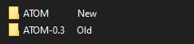
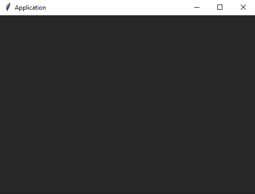
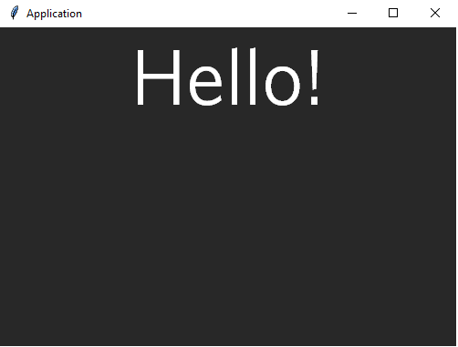
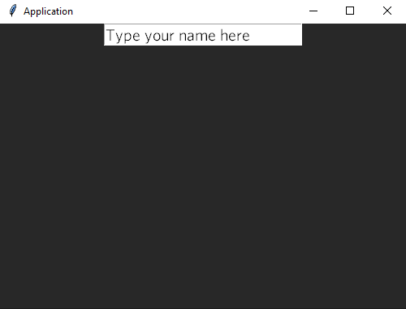
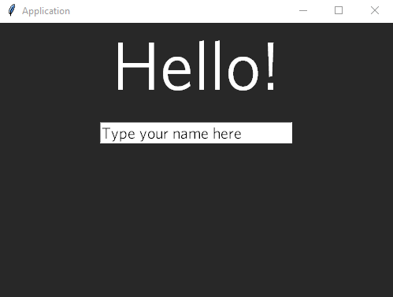

Welcome to Bare
The most human-sounding language in the world! To download Bare visit bare-language.carrd.co.
Commands
bare- Open a new Bare terminalbare [File name]- Run a Bare file through Command Promptbare new- Get help about creating a new applicationbare new console- Create a new console applicationbare new window- Create a new window applicationbare new window template- Create a new window application with a pre-written templateBatl [File name]- Edit a Bare file with Batlbarecompiler [File name]- Compile a Bare file to .bac (Compiled Bare file)barexecutor [File name] [Icon] (window-app)- Compile a Bare file to .exe. If you includewindow-app, the application will not show a console/terminal window when you startup the application
Installing and testing
To start off, download and install Bare from our official website if you haven't already.
After installing Bare, go to directory C:\Program Files (x86)\Bare\installation and open BareInstaller.exe. This will register Bare in your Windows system.
To create a new file, right click -> New textdocument and rename it to [Whatever you'd like].ba.
Batl - The Bare Editor Tool
If you want to use Batl, the Bare Editor Tool, open Command prompt (cmd) and type Batl {Your file name}.ba. It will open Batl with your file.
Bare's Syntax
Before I show you Bare's syntax, I'm just going to say this: It's really easy. Anyone can understand this. If you don't, don't be demotivated, but join our Discord to get help!
Keywords
Keywords are statements that are defined internally. You don't need any atoms (Bare's libraries) to use them.
Keyword: say
To put text on the screen, (Python: print(), Javascript: console.log(), C#: Console.WriteLine(), etc...) use the keyword say.
say 'Hello world!'
Keyword: ask
To ask for input, use the keyword ask.
ask 'Username: '
You can also only use ask, so it will just take someone's input and put nothing on the console.
This keyword will not return any string! To store the returned value in a variable, use keyword get.
Keyword:
Keyword: hyperlink
You can open a link through your webbrowser with Bare with hyperlink.
You will always have to have "http://" or "https://" at the start of a link! It will otherwise return an error.
hyperlink 'bare-language.carrd.co'
Keyword: readout
Read a file and immediately say the content. This will be stored in an internal variable.
readout 'Hello.txt'
Output:
Hello world!
Keyword: say-previously-read
After using the keyword readout, The content of the given file will be stored in an internal variable.
If you wish to say the content more than one time, you can use say-previously-read. This will say what is currently in the internal variable, so the previous file it has read.
readout 'Hello.txt'
say-previously-read
Output:
Hello world!
Hello world!
Keyword: delete
If you need to delete a file from any directory (If the file is located in another directory, make sure to include the path), use the keyword delete.
delete 'Hello.txt'
Keyword: get-html
When you need to get and immediately say the HTML script (Or if the website is just raw text, get the text), this is the keyword to use. Let's try this with bare-language.carrd.co (Output is cut out on purpose because it's too long).
get-html 'bare-language.carrd.co'
Output:
<!DOCTYPE HTML><html lang="en"><head><title>Bare</title><meta charset="utf-8" /><meta name="viewport" content="width=device-width,initial-scale=1,user-scalable=no" /><meta name="description" content="Welcome to Bare! The most human-sounding programming language ever! This programming language is the best language to switch to if you care about readability, simpleness and power." /><meta property="og:site_name" content="Bare" /><meta property="og:title" content="Bare" /><meta property="og:type" content="website" /><meta property="og:description">
...
Keyword: make
To make a function, use keyword make. A function always begins with a $! Don't forget to include that!
Function lines are separated by |,
You will see that in the example.
Let's make a function named greet. It will greet the user and ask him how he's doing. After that, the user can write how he's doing.
make $greet: say 'Hello! How are you doing?' | ask 'Im '
Now we will have to actually call the function, because we have just made it. You can call a function by typing $[Your Function name].
$greet
Let's run! I will write fine when it asks me to type something.
Output:
Hello! How are you doing?
Im fine
Keyword: use
It would be much better to reuse code, instead of writing the same code in every application you make. That's why the keyword use exists! You can use an atom That's either made by Bare, or made by the community.
To use an atom, you will have to type its name in between brackets (these ones: <>), an arrow (like this: ->) and then the path to your desired atom in between brackets (these ones: [])
If your atom is in the same folder as your application, you can leave the brackets empty (like this: [])
Let's take the atom window for example. To use window, you will have to type:
use <window> -> [C:\Program Files (x86)\Bare\atoms]
If you want to make your own atom, you will have to do a few things.
1. Create a folder, name it what you want your atom to be called.
2. Inside the folder, make a new file. Name it what you want your atom to be called. Don't forget to change the extension to .ba!
3. Edit the file and write what you'd like.
Note: Don't call any function in your atoms. After you use an atom, you will be able to call a function in your application.
Keyword: start
If you need to start (launch) a file from any directory (If the file is located in another directory, make sure to include the path), use the keyword start.
start 'Hello.txt'
Keyword: open, write, read, close, write-previously read, read-current, set-cursor
Editing/reading a file is an essential thing when programming. Let your application manage your database or write a long message into a file!
If you want Bare to write something into a file, you need to open it before that. Luckily, you don't need to actually open it, Bare will open it in the background when you use the keyword open.
open 'Hello.txt'
Now you have opened the file. To write something into it, use the keyword write. You don't need to include the filename, because you have already opened it.
write 'I wrote this message with Bare!'
If you don't want to write something, but rather read it so you can write the content of a file into another file, you can use read.
read 'Hello.txt'
Bare has now read your file, and the content of the file is stored in an internal variable called self.read.
To write what you have previously read into a file (much like say-previously-read, but instead of saying it writes it into a file), use write-previously-read.
read 'Hello.txt'
write-previously-read 'Hello2.txt'
If you already have a file open and want to read the content of that - rather than pass in a file name, you can use the keyword read-current.
|| content of Hello.txt: 'Hello world!'
open 'Hello.txt'
read-current
Bare has now read your file and it has stored the content in self.read.
Do you want to set your cursor at a specific point in a file? You can do that with set-cursor.
|| Set your cursor at the beginning in a file
set-cursor (0)
|| Set your cursor at an other point in a file
set-cursor (30)
If you are done editing your file, you will need to close it (Otherwise it will stay in use). You can do that by just typing close, no filename needed because Bare already knows which file you're talking about.
Keyword: if, default:
When you need Bare to make a decision by checking if something is true or false, you can use if and default. You cannot use default by itself, you always need if.
Unlike other languages, You have to define the default consequence before you define an if statement. Other than that, an if statement follows the same syntax as Python:
| Sign | Meaning |
|---|---|
| == | is equal to |
| != | is not equal to |
| < | is smaller than |
| > | is greater than |
| % | Rest of a number |
For example, when you want to check if a file contains a specific string, you can use if.
open 'Hello.txt'
write 'Hello!'
close
read 'Hello.txt'
default: say 'No, it does not say Hello!'
if self.read=='Hello!': say 'Yes, it says Hello!'
Output:
Yes, it says Hello!
Keyword: compile_atom, compile
If you have made an atom but you have too many files so you can't use AtomCompiler to compile everything one by one? Use this keyword to make things 100x faster!
|| Compile files with compile_atom
compile_atom 'atom1.ba'
compile_atom 'atom2.ba'
compile_atom 'atom3.ba'
compile_atom 'atom4.ba'
compile_atom 'atom5.ba'
compile_atom 'atom6.ba'
compile_atom 'atom7.ba'
Compile your scripts to a .bac file for more safety. You can do this with compile.
|| Compile files with compile
compile 'script1.ba'
compile 'script2.ba'
compile 'script3.ba'
compile 'script4.ba'
compile 'script5.ba'
Keyword: var
Storing lots of data into a single word/name, crazy to think about right? No!
Simply said, variables are like boxes. You give the box a name and store data in the box. If you ever need to reference the box, you can use its name.
Let's say you want to store a sentence: Hello, world! into a variable: greeting. After you stored it into the variable, you want to say it. Let's do that!
var greeting='Hello, world!'
say greeting
Output:
Hello, world!
Keyword: nothing
If you want to initialize a function (Don't make it do anything), you can use nothing because you can't leave a function empty.
If you try to leave a function empty, this will be the output:
Error (Most recent is shown last):
File '<YOUR FILE>',
Line 1, word 1:
EmptyFunctionError:
Empty function; if you don't want your function to do anything, use the keyword 'nothing'.
During this error, another error occurred:
Error (Most recent is shown last):
File '<YOUR FILE>',
Line 2, word 3:
InvalidFunctionError:
Function 'function' does not exist.
~~~~~~~~
^
To avoid this error, use nothing.
make $function: nothing
$function
Now there won't occur an error!
Keyword: delete-directory
Deleting a directory is as easy as deleting a file with delete-directory.
You are only able to delete a directory when the given directory is empty.
delete-directory 'A/Directory'
Keyword: change-directory
You can change your working directory with change-directory (Python: os.chdir())
change-directory 'C:\\Users\\BareUser\\Dekstop\\My-Project'
Keyword: errorize, lift
Making a custom error and lifting it when you want is obviously essential for making your own atom.
You can errorize a string to be able to lift it later on.
errorize 'SomeError'
lift 'SomeError': 'Something went wrong.'
Output:
Error (Most recent is shown last):
File '<Application.ba>',
Line '<lift>', word 3:
SomeError:
Something went wrong.
There is your custom error!
If you don't errorize a string before lifting it, this will be the output:
Error (Most recent is shown last):
File '<Application.ba>',
Line 2, word 4:
LiftingError:
Could not lift 'SomeError', because it is not a valid error. Have you used the keyword 'errorize'?
~~~~~~~~~
^
Keyword: equation
When you need Bare to equate a mathematical equation, you can use the keyword equation to store the answer to a sum into a variable.
It is close to Python's way of equating math, but you can use x and * instead of only *.
| Symbol / Operator | Meaning |
|---|---|
| + | Plus |
| - | Minus |
| / | Divide |
| * | Multiply |
| x | Multiply |
equation answer=((1 + 500) x 10) * 0.5
say answer
Output:
2505.0
Atoms
Atoms are scripts made by people, for people! You can use atoms to not have to rewrite code every time you write an application.
This is how you structure atoms:
Atom-Name (Directory):
- script_1.ba
- compiled_script_1.batom
- config.txt (Optional)
- README.txt (Optional)
You can add as many scripts as you'd like.
Make sure your script doesn't call any functions when someone uses it!
Your script files should look something like this:
make $function1: say 'Hello, world!'
make $function2: say 'Hello, again!'
make $function3: function1 | function2
Built-in Atoms
Some atoms are built-in, meaning they aren't stored on your pc. Actually, they are inside of Bare. To use a built-in atom, do this:
use <atom> -> [built-in]
These are all of the built-in atoms as of now:
| Atom | Use of atom |
|---|---|
| system | For anything related to a PC's system |
| os | For anything related to a PC's Operating System |
| time | Control (and see) time of your PC |
| bagui | Make a GUI for your application with buttons, inputfields and text |
AtomCompiler
Using AtomCompiler is optional. If you don't want people seeing your scripts when they use it, use AtomCompiler.
The only thing you have to do to compile your atoms is call this command (in CMD):
atomcompiler [YOUR SCRIPT HERE]
AtomCompiler will then generate a compiled version of your script, written in bytes.
Releasing
Releasing your atoms for everyone to download isn't that hard.
Make sure you have joined Bare's discord server.
If you're joined, you can request your atom to be added to BIL in #atoms.
Installing
Installing atoms is made easy with BIL!
To install an atom, call this command (in CMD):
bil get [ATOM]
The atom will then be installed. You're not done yet though!
1. Extract the downloaded file into C:\Program Files (x86)\Bare\atoms\online-packages.
2. Remove the version of the extracted atom's folder name, like this:

Now you have fully installed an atom!
Built-in Atoms
Bagui
Make your app easier to use with a GUI. Making a GUI can be hard though, but not with Bagui.
To make a new Bagui window file, open cmd and type:
bare new window
You can of course just make a file yourself.
Keywords
After using the atom, you can start using its keywords:
| Keyword | Use of keyword |
|---|---|
| new-window | Create a new window |
| configure | Configure a window |
| add-text | Add text to a window |
| add-inputfield | Add an inputfield to a window |
| add-space | Go down one line in a window |
| add-button | Add a button to a window which will, when clicked, run a function |
| forget | Remove a widget from a window |
| destroy-window | Destroy a window, which will only exit from that specific window |
| disable | Disable a widget (A button for example). It will not forget it, but it will not be able to be used. |
| enable | Enable a widget |
| get-response | Get the response that a widget returns. For example: What is typed in an inputfield. |
| loop | Use this keyword at the end of your script, so it will keep looping the app's frames until it is closed. |
Keyword: new-window
Create a new window. You can give this window a name (Which is a string), but you can't use a variable to name it. The name of the window will not be stored into a variable, you will always have to refer to it as a string.
new-window 'root'
The default geometry of a window is 500x350.
Keyword: configure
Configure a window.
configure 'root' ; options...
These are the options you can choose from:
| Option | What the option does |
|---|---|
| background-color | Change the background color of a window |
| width | Change the width of a window |
| height | Change the height of a window |
| fullscreen | if set to True, a window will be covering up your whole screen |
| title | Set the title of a window |
Example:
new-window 'root'
configure 'root' ; background-color='#282828' ; title='Application'
Result:

Keyword: add-text
Add text to a window.
add-text 'root' ; options...
These are the options you can choose from:
| Option | What the option does |
|---|---|
| foreground-color | Change the color of the text |
| background-color | Change the color behind the text |
| text | Change what the text says |
| font | Set the font of the text |
| font-size | Change the size of the font |
| font-weight | Change the weight of the font (Possibilities: normal and bold) |
| label | Give your text a label so you can refer to it later on |
Example:
new-window 'root'
configure 'root' ; background-color='#282828' ; title='Application'
add-text 'root' ; text='Hello!' ; foreground-color='white' ; background-color='#282828' ; font='Whitney Book' ; font-size=65 ; font-weight='normal'
Result:

Keyword: add-inputfield
Add an inputfield to a window.
add-inputfield 'root' ; options...
These are the options you can choose from:
| Option | What the option does |
|---|---|
| foreground-color | Change the color of the text in the inputfield |
| background-color | Change the color behind the text in the inputfield |
| text | Place text into the inputfield |
| label | Give your text a label so you can refer to it later on |
| font | Set the font of the text |
| font-size | Change the size of the font |
| font-weight | Change the weight of the font (Possibilities: normal and bold) |
Example:
new-window 'root'
configure 'root' ; background-color='#282828' ; title='Application'
add-inputfield 'root' ; text='Type your name here' ; label='MyInputfield' ; font='Whitney Book' ; font-size=15 ; font-weight='normal'
Result:

Keyword: add-space
Go down one line in a window.
add-space 'root' ; '[Background Color]'
Example:
new-window 'root'
configure 'root' ; background-color='#282828' ; title='Application'
add-text 'root' ; text='Hello!' ; foreground-color='white' ; background-color='#282828' ; font='Whitney Book' ; font-size=65 ; font-weight='normal' ; label='MyText'
add-space 'root' ; '#282828'
add-inputfield 'root' ; text='Type your name here' ; label='MyInputfield' ; font='Whitney Book' ; font-size=15 ; font-weight='normal'
Result:

Keyword: add-button
Add a button to a window which will, when clicked, run a function.
add-button 'root' ; options...
These are the options you can choose from:
| Option | What the option does |
|---|---|
| foreground-color | Change the color of the text on your button |
| background-color | Change the color of the button |
| text | Change what the text says on the button |
| border | Set the border size around the button |
| width | Change the width of the button |
| height | Chang the height of the button |
| label | Give your text a label so you can refer to it later on |
| command | Pass in a function so it will be ran when the button is pressed |
Example:
new-window 'root'
configure 'root' ; background-color='#282828' ; title='Application'
add-space 'root' ; '#282828'
make $myfunction: say 'Clicked!'
add-button 'root' ; text='Click me!' ; border=0 ; width=25 ; label='MyButton' ; command=$myfunction
There is no result for this keyword, you will have to try it out yourself.
Keyword: forget
Remove a widget from a window.
forget '[AWidget]'
Keyword: destroy-window
Destroy a window, which will only exit from that specific window.
destroy-window 'root'
Keyword: get-response
Get the response that a widget returns. For example: What is typed in an inputfield. Instead of defining the variable name before the response, you do it in reverse.
|| Store the string you get from an inputfield in a variable called response.
get-response 'AnInputfield'=response
Keyword: loop
After building your application with widgets and functions, you will need to actually loop the application so it will keep drawing frames.
Use this keyword at the end of your script, so it will keep looping frames of the app until it is closed.
loop 'root'
Time
Control (and see) time of your PC.
This atom will give you a few variables.
These are all of the variables and keywords it creates as of now:
| Variable | Data in the variable |
|---|---|
| threading_time | Return the value (in fractional seconds) of the sum of the system and user CPU time of the current thread. It does not include time elapsed during sleep. It is thread-specific by definition. The reference point of the returned value is undefined, so that only the difference between the results of consecutive calls in the same thread is valid. |
| threading_nano | Similar to threading_time but return time as nanoseconds. |
| monotonic | Return the value (in fractional seconds) of a monotonic clock, i.e. a clock that cannot go backwards. The clock is not affected by system clock updates. The reference point of the returned value is undefined, so that only the difference between the results of consecutive calls is valid. |
| monotonic_nano | Similar to monotonic, but return time as nanoseconds. |
| performance | Return the value (in fractional seconds) of a performance counter, i.e. a clock with the highest available resolution to measure a short duration. It does include time elapsed during sleep and is system-wide. The reference point of the returned value is undefined, so that only the difference between the results of consecutive calls is valid. |
| performance_nano | Similar to performance, but return time as nanoseconds. |
| process_time | Return the value (in fractional seconds) of the sum of the system and user CPU time of the current process. It does not include time elapsed during sleep. It is process-wide by definition. The reference point of the returned value is undefined, so that only the difference between the results of consecutive calls is valid. |
| process_nano | Similar to process_time, but return time as nanoseconds. |
| time | Return the time in seconds since the epoch as a floating point number. The specific date of the epoch and the handling of leap seconds is platform dependent. On Windows and most Unix systems, the epoch is January 1, 1970, 00:00:00 (UTC) and leap seconds are not counted towards the time in seconds since the epoch. This is commonly referred to as Unix time. Note that even though the time is always returned as a floating point number, not all systems provide time with a better precision than 1 second. While this function normally returns non-decreasing values, it can return a lower value than a previous call if the system clock has been set back between the two calls. |
| time_nano | Similar to time but returns time as an integer number of nanoseconds since the epoch. |
| Keyword | Function |
|---|---|
| wait | Make your application wait (or sleep) for a number of seconds |
System
For anything related to a PC's system.
This atom will give you a few variables.
These are all of the variables and keywords it creates as of now:
| Variable | Data in the variable |
|---|---|
| system_argv | The list of command line arguments passed to a Bare script. |
| byteorder | An indicator of the native byte order. This will have the value 'big' on big-endian (most-significant byte first) platforms, and 'little' on little-endian (least-significant byte first) platforms. |
| builtin_atom_names | A tuple of strings giving the names of all modules that are compiled into this Bare interpreter. (This information is not available in any other way) |
| copyright | A string containing the copyright pertaining to the Bare interpreter. |
| executable | A string giving the absolute path of the executable binary for the Bare interpreter, on systems where this makes sense. |
| allocated_blocks | Return the number of memory blocks currently allocated by the interpreter, regardless of their size. This function is mainly useful for tracking and debugging memory leaks. If a Bare build or implementation cannot reasonably compute this information, this variable is allowed to return 0 instead. |
| Keyword | Function |
|---|---|
| exit | Forcibly quit out of your application |
OS
For anything related to a PC's Operating System.
This atom will give you a few variables.
These are all of the variables and keywords it creates as of now:
| Variable | Data in the variable |
|---|---|
| os_name | The name of the operating system dependent module imported. The following names have currently been registered: 'posix', 'nt', 'java'. |
| current_directory | Return a string representing the current working directory. |
| Keyword | Function |
|---|---|
| change-directory | Change the current working directory |